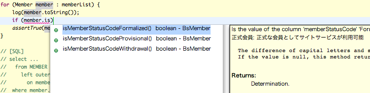
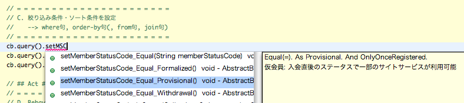

区分値
- ぱっと見イメージ
- 区分値とは？
- 区分値のタイプセーフ解決
- 区分値の設定(dfprop)
- ENUMクラス(CDef)の利用
- SchemaHTMLでの表示
- ネイティヴ型メソッドの削除
- 暗黙の区分値チェック
- デフォルトのジレンマ
- 区分値のグルーピング (GroupingMap)
- 姉妹コードの利用 (SisterCode)
- 独自の属性を追加 (SubItemMap)
- Exampleのススメ
- 面倒でも全体の利益のために
ぱっと見イメージ
e.g. テーブル区分値を利用する例 {MemberStatus} @classificationDefinitionMap.dfprop
map:{
; MemberStatus = list:{
; map:{topComment=入会から退会までの会員のステータスを示す; codeType=String}
; map:{
; table=MEMBER_STATUS; code=MEMBER_STATUS_CODE
; name=MEMBER_STATUS_NAME; comment=DESCRIPTION
; orderBy=DISPLAY_ORDER
}
}
...
}
e.g. 区分値の設定や判定、絞り込み条件設定 @Java
Member member = new Member();
member.setMemberStatusCode_Formalized(); // 設定メソッド (正式会員にする)
...
if (member.isMemberStatusCodeFormalized()) { // 判定メソッド (正式会員かどうか)
...
}
String statusCode = ... // リクエストなどから飛んで来たら
member.setMemberStatusCodeAsMemberStatus(
CDef.MemberStatus.codeOf(statusCode)); // CDef型での設定メソッド
MemberCB cb = new MemberCB();
cb.query().setMemberStatusCode_Equal_Formalized(); // 条件メソッド (正式会員)
区分値とは？
DBFluteでは、あるカラムに格納される意味のある決まった値の集合(カテゴリ)を 区分値 と呼びます。例えば、MaihamaDBでは、会員ステータスコード(MEMBER_STATUS_CODE: 正式会員、仮会員、退会会員)、商品ステータスコード(PRODUCT_STATUS_CODE: 生産可能、販売可能、...) が該当します。 (区分値という言葉を、"区分わけするための値たち" というニュアンスとして捉えています)
また、その区分値のそれぞれの値 (例えば、正式会員) を 区分値要素 と呼びます。区分値と関連付けられたカラムには、その区分値で定義されていない要素は通常格納されませんが、実際に制約が存在するかどうかは区分値の実現方法次第です。 例えば、テーブルで管理していれば、FK制約により区分値に定義されていない値の登録を防ぐことができます。
ただし、区分値、区分値要素と明確に言葉を定義してはいますが、文脈から判断できるような場合は 区分値要素を単に区分値と呼ぶことも あります。 (というか、ほとんどの場合、文脈で判断して "区分値" としか言わないかも...するとでも時々会話がすれ違うことも)
区分値のタイプ
区分値には大きく二つのタイプがあります。
- テーブル区分値
- テーブル管理されていて定義がデータとして実際に存在する区分値。MaihamaDBでは、会員ステータスや商品ステータスが該当する。 FK制約によるチェックの恩恵を得ることができる。
- 暗黙の区分値
- ドキュメント上で決められているだけで、その定義は人しか知らない区分値。MaihamaDBでは、フラグ系のカラムが該当する。 別途チェック制約などを利用しない限り、DB上でのチェックは掛からない。
前者の方が制約の恩恵を得ることもでき、明示的でわかりやすいため、全ての区分値がこの方式で扱えるのであればそれに越したことはありませんが、例えば "フラグ" (0 or 1) のような汎用的で統一的な区分値の場合は後者のやり方で実現することも多く、一つのアプリ内に混在することも想定されます。
また一方で、テーブル区分値は (DB設計者としては) 面倒だと思われがちですが、そこから得られるメリットとは比べられるものではありません。
区分値要素の属性
(DBFluteにて定義する)区分値要素が持つ属性は以下の通りです。
- コード (code)
- 区分値要素の実際のデータベース上で利用するコード値です。 char型の文字列だったり、数値だったりとDB設計次第でデータ型は変わります。必須の項目です。
- 名前(識別名) (name)
- 区分値要素を識別する名前です。基本的には英名を想定しており、メソッド名の一部やENUMの定数名などに利用されます。 よって、そういった場所での利用に適した文字列であることが求められます。必須の項目です。
- 別名(表示名) (alias)
- 区分値要素の別名(表示名)です。基本的には人が見るための表示用の名前を想定しており、リストボックスでのラベルやJavaDocコメントなどで利用されます。 ただ、テーブル区分値の場合は、そもそもカラムから取得できるため、あまりプログラム上で利用されることは少ないかもしれません(キャッシュとしてあえて利用することがありえるかも)。
- 国際化対応するときは、これ一つでは足りないので、subItemMapの機能を使て別途言語ごとに属性を追加していく必要があります。
- コメント(説明) (comment)
- 区分値要素のコメント(説明)です。SchemaHTMLやJavaDocなどのドキュメントなどで利用されます。プログラム上で取得することはできません。
区分値の扱いの難しさ
それぞれの区分値要素は、業務的に意味を持った値であるため、DBアクセスにおける検索条件やプログラム上での判定条件などに頻繁に利用されます。 もっとも単純で、区分値の取扱いにおける問題を何も解決していない区分値の利用例が以下の通りです。
e.g. 区分値の取扱いにおける問題を何も解決していない区分値の利用例 {MemberStatus} @Java
if ("FML".equals(member.getMemberStatusCode())) {
}
いわゆるハードコードというやり方で、以下のデメリットがあります。
- コードのタイプミスが発生する(発生してもなかなか気付かない)
- コード変更が発生した場合の影響範囲の特定が難しい
タイプミスもさることながら、コード変更も重要なポイントです。要はDB変更の亜種であり、どうしても将来的に必要なコード変更であったりする可能性も十分あります。 また、ステータスのような区分値は、運用開始後も追加されたり変更されたりする可能性が高い部類のものです。 プログラムとしてはぜひともコード変更に強いやり方で実装したいところです。
区分値のタイプセーフ解決
DBFluteでは、区分値はタイプセーフ、そして、コード変更にも強い をポリシーとしています。具体的には、区分値定義から区分値メソッドを自動生成して、プログラム上ではそのメソッド経由で区分値処理を行うようにします。 (コード変更が発生した場合は、メソッド名に影響が出ないレベルであれば影響なし、メソッド名に影響があるレベルであればコンパイルエラーとして検知)
- Entity
- 区分値を設定するメソッド、区分値を判定するメソッド
- ConditionBean
- 区分値で検索条件を設定するメソッド
- ParameterBean
- 区分値でパラメータを設定するメソッド
e.g. 区分値の設定や判定、絞り込み条件設定 @Java
Member member = new Member();
member.setMemberStatusCode_Formalized(); // 設定メソッド (正式会員にする)
...
if (member.isMemberStatusCodeFormalized()) { // 判定メソッド (正式会員かどうか)
...
}
String statusCode = ... // リクエストなどから飛んで来たら
member.setMemberStatusCodeAsMemberStatus(
CDef.MemberStatus.codeOf(statusCode)); // CDef型での設定メソッド
MemberCB cb = new MemberCB();
cb.query().setMemberStatusCode_Equal_Formalized(); // 条件メソッド (正式会員)
補完のとき、JavaDocコメントにも注目です。
図 : Entityでの区分値メソッドの補完 
{kind=link}
区分値の説明が表示されるので、"この区分値ってどういうものだっけ？" という疑問が生まれても、実装しながら理解することができます。
図 : ConditionBeanでの区分値メソッドの補完 
{kind=link}
区分値の設定(dfprop)
区分値メソッドを生成するための区分値定義に関する設定を、classificationDefinitionMap.dfprop にて定義を行います。設定方法は、区分値のタイプにより分かれます。
テーブル区分値
区分値要素がデータベース上に存在していますので(ReplaceSchemaなどでデータ登録されていることが前提)、 対応するテーブル名やカラム名を定義し、自動生成時に実際にそのテーブルのデータを検索して、区分値定義を取得します。
e.g. テーブル区分値を利用する例 {MemberStatus} @classificationDefinitionMap.dfprop
map:{
; MemberStatus = list:{
; map:{topComment=入会から退会までの会員のステータスを示す; codeType=String}
; map:{
; table=MEMBER_STATUS; code=MEMBER_STATUS_CODE
; name=MEMBER_STATUS_NAME; comment=DESCRIPTION
; orderBy=DISPLAY_ORDER
}
}
...
}
どのカラムがどの区分値に関連付くのか明確なため、classificationDeploymentMap.dfprop の設定は不要です。(DBFluteがFKの関連を辿って自動で判断します)
- 名前(識別名)に対応するカラムがない場合
- 区分値要素の名前(識別名)に対応するカラムがない場合は、業務的に表示用として利用するカラム(別名(alias)に対応するカラム)を代わりに name に定義します(その場合、そのカラムは識別名と表示名を兼任したカラムであると想定されます)。その場合は、alias の定義は省略できます(省略すると name と同じ値となります)。
- どうしても、対応させる適切なカラムが存在しない場合は、コードに対応するカラム(と同じカラム)を指定します。 その場合、メソッド名にはコード値が利用されますが、タイプセーフであることに変わりはありません。 但し、コード値が区分値要素を見分けるのにわかりにくい表現である場合は、comment をしっかり定義して、JavaDocコメントでの補足を利用して実装しやすいようにする必要があるでしょう。
- コメント(説明)に対応するカラムがない場合
- コメント(説明)に対応するカラムがなくても業務上問題ない(可能性の高い)ものではありますが、 ディベロッパーの実装を助ける重要な補助要素ではありますので、テーブル区分値のテーブルに、相当するカラムを定義しておくことをお奨めします。 それは単にDBFluteにおける話だけではなく、開発全体の利益(区分値を管理する上でのドキュメントの充実)につながるものと考えられます。
- テーブル区分値における別名(表示名)の扱い
- テーブル区分値では、別名(表示名)を定義した場合、JavaDocなどのドキュメント上の充実だけの利用を想定しており、プログラム上での取得は想定されません。 厳密には取得できなくはないのですが、ディベロッパーからは取得しづらいような仕組みになっています。 テーブル区分値の場合は、実際のカラムから取得して利用することができ(また、そうするべきであると考えられる)、その必要性はほとんどないためです。
暗黙の区分値
定義が(DBFluteが参照できる世界の)どこにも存在していませんので、DBFluteプロパティ上に具体的な区分値要素を定義していきます。
e.g. 暗黙の区分値を利用する例 {MemberStatus} @classificationDefinitionMap.dfprop
map:{
; MemberStatus = list:{
; map:{topComment=入会から退会までの会員のステータスを示す; codeType=String}
; map:{code=PRV;name=Provisional;alias=仮会員 ;comment=入会直後のステータスで一部のサイトサービスが利用可能}
; map:{code=FML;name=Formalized ;alias=正式会員;comment=正式な会員としてサイトサービスが利用可能}
; map:{code=WDL;name=Withdrawal ;alias=退会会員;comment=退会が確定した会員でサイトサービスはダメ}
}
...
}
また、区分値定義だけでは、どのテーブルのどのカラムにその区分値が関連付くものかも判断が付きませんので、その関連付けを classificationDeploymentMap.dfprop にて設定する必要があります。
e.g. 暗黙の区分値のカラムとの関連付けをする例 {MemberStatus,Flg} @classificationDeploymentMap.dfprop
map:{
; $$ALL$$ = map:{suffix:_FLG = Flg} # 全テーブルの_FLGで終わるカラム
; MEMBER_STATUS = map:{MEMBER_STATUS_CODE = MemberStatus}
}
ENUMクラス(CDef)の利用
DBFluteの区分値機能の内部構造として、実は自動生成されるENUMが存在します。allcommonパッケージ配下の CDef というクラスです。このクラスの内部クラスとして全ての区分値に対応するENUMが存在します。 但し、基本的には実装上は区分値はメソッド解決されるため、あまり意識することはありません。
SchemaHTMLでの表示
Docタスクで自動生成される SchemaHTML では、設定された区分値の一覧が望むことができます。 また、テーブルのカラム情報の中に関連する区分値へのリンクがあり、どのカラムがどの区分値と関連するのかがすぐにわかるようになっています。
ネイティヴ型メソッドの削除
区分値メソッドを生成しても、ネイティヴ型の設定メソッドはデフォルトの設定では残っています。 そのメソッドを呼び出せないようにして区分値メソッドでの設定の強制力を高めたい場合は、 littleAdjustmentMap.dfprop の isForceClassificationSetting を true にすることで、ネイティヴ型の設定メソッドを不可視(protected)にすることが可能です。
また、こちらの設定を有効にした場合は、一緒に isCheckSelectedClassification も true にしておくと良いでしょう。ネイティヴ型の設定メソッドを不可視にしておきながら、このプロパティを true にしない理由は(ほぼ)ないでしょう。
多くの開発現場で、この設定を true に適用できるでしょう。"デフォルトのジレンマ" のコラムを読んで特に問題ないと思えるのであれば、積極的に設定していった方が良いでしょう。
暗黙の区分値チェック
暗黙の区分値は、データ登録時には何の制約もありません。 アプリ実装ではDBFluteの区分値メソッドを使ってタイプセーフにできますが、ReplaceSchemaのエクセルデータ作成ではケアレスミスが簡単に起きてしまいます。 そこで、DBFluteのオプションで登録時に自動チェックすることができます。
暗黙の区分値の定義の topComment の map の中で、isCheckImplicitSet を true に設定すると、ReplaceSchema のデータ登録時や、Entity の Setter にて、正しい区分値かどうかの存在チェックがされるようになります。
e.g. 暗黙の区分値チェックを設定する例 {MemberStatus} @classificationDefinitionMap.dfprop
map:{
; MemberStatus = list:{
; map:{
; topComment=入会から退会までの会員のステータスを示す; codeType=String
; isCheckImplicitSet=true
}
; map:{code=PRV;name=Provisional;alias=仮会員 ;comment=...}
; map:{code=FML;name=Formalized ;alias=正式会員;comment=...}
; map:{code=WDL;name=Withdrawal ;alias=退会会員;comment=...}
}
...
}
特に、エクセルデータの作成作業では、ケアレスミスで簡単に間違った値をついつい入力しがちです。間違った値でテストをしてもデバッグが大変なだけでいいことがありません。 テストデータ作成者の精神的負担を軽減する意味でも、積極的に設定していった方が良いでしょう。
デフォルトのジレンマ
DBFluteとしては、ネイティヴ型の設定メソッドの削除も暗黙の区分値チェックも、デフォルトでそうなるようにしたくてしょうがありません。 ですが、それをやっていません。
もし万が一、別のアプリで利用する区分値とか、知らされてなかったとか、そもそも区分値の全てのセットがわからないとか、つまり、いわゆる "隠れ区分値" があるような場合、DBFluteのチェックがトラブルの原因になる可能性があるからです。
そんなむちゃくちゃな状況ありえないでしょうと思われるかもしれませんが、実際の現場では少なからず区分値の管理が徹底できていないところもあります。 もし、DBFluteのデフォルトの仕様がトラブルを引き起こす原因になってしまったら、フレームワークとしての信用に関わる問題となる可能性があります。
そういうことから、デフォルトではなく明示的に true にしてもらうようにしています。"隠れ区分値" なんてうちではありえない、あっちゃだめだ、と言えるなら(ほとんどの開発でそう言えるかと)、それら設定はすぐさま true にした方が良いでしょう。
区分値のグルーピング (GroupingMap)
グルーピングの概要
例えば、正式会員と仮会員とで "サービスが利用可能なステータス" というように複数のステータスに対して業務的な意味付けがある場合、プログラム上ではその複数のステータスを使った判定処理が想定されます。 その意味付けをあらかじめ定義(グルーピング)しておいて、その複数のステータスを使った判定メソッドを生成することができます。 @since 0.9.9.7A
e.g. サービスが利用可能なステータスのグルーピング判定 @classificationDefinitionMap.dfprop
Member member = ...
if (member.isMemberStatusCode_ServiceAvailable()) {
}
MemberCB cb = new MemberCB();
cb.query().setMemberStatusCode_InScope_ServiceAvailable();
姉妹コードの利用 (SisterCode)
指定されたコード値とは別のコード値を取り扱いたいときがあります。例えば、フラグ系の区分値において、1/0 だけでなく、true/false でも扱えるようになど。その場合、CDef の codeOf() で true や false でも識別できるようになります。@since 0.9.9.4B
e.g. 暗黙の区分値で姉妹コードを利用する例 {Flg} @classificationDefinitionMap.dfprop
map:{
; Flg = list:{
; map:{topComment=フラグ; codeType=Number}
; map:{
; code=1; name=True; alias=Checked; comment=フラグが立っている
; sisterCode=true
}
; map:{
; code=0; name=False; alias=Unchecked; comment=フラグが立っていない
; sisterCode=false
}
}
...
}
また、フラグ系の区分値(要素が二つ固定)で、姉妹コードに true と false が指定されている場合は、Entity や ConditionBean に Boolean 型で設定できるメソッドが追加されます。
e.g. 姉妹コードによる Boolean 型設定メソッドの例 {Flg} @Java
MemberLogin login = new MemberLogin();
login.setMobileLoginFlgAsBoolean(isMobileLogin());
※テーブル区分値でも利用できます。@since 1.0.5N patch at 2015/01/27, @since 1.1.0-sp1
独自の属性を追加 (SubItemMap)
区分値に独自の属性を追加することができます。 @since 0.9.9.3C
それぞれの区分値要素のmapの中で、subItemMapというプロパティで独自の属性を指定します。
独自の属性
e.g. 暗黙の区分値で独自の属性を追加する例 @classificationDefinitionMap.dfprop
map:{
; MaihamaStatus = list:{
; map:{topComment=独自の属性のExample; codeType=String}
; map:{
; code=SEA; name=Sea; alias=海だよ; comment=DocksideとかHangarとか
; subItemMap=map:{
; priceType=MYS ; rank=2
}
}
; map:{
; code=LND; name=Land; alias=陸だよ; comment=ShowbaseとかOrleansとか
; subItemMap=map:{
rank=5
}
}
}
...
}
この場合、priceType と rank という独自の属性が追加されています。 CDefでは、subItemMap()というメソッドで設定されたmapをそのまま取得することができます。 まず、一部の区分値要素にしか設定されていない priceType は、必ずこの方法で取得します。
e.g. 独自の属性をCDefから取得する(基本) @classificationDefinitionMap.dfprop
String priceType = (String)CDef.MaihamaStatus.Sea.subItemMap().get("priceType");
一方で、rank の方は全ての区分値要素に設定されています。 このような場合は、既にそのキー名のメソッドが CDef に追加されています。
e.g. 独自の属性をCDefから取得する(要素) @classificationDefinitionMap.dfprop
String rank = CDef.MaihamaStatus.Sea.rank();
属性の値は、基本的に全て文字列(String型)として扱われます。 数字を指定しても、true/falseを指定しても String です。精度などの自動判別が正確にできないため、アプリ側でパースする必要があります。
属性の値に、map型やlist型を指定することもできますが、こちらも単なる文字列として扱われます。 DBFluteランタイムの MapListString クラスなどを利用してパースして利用します。 ただ、全ての要素に設定した場合のメソッドの戻り値は String ではなく、Object になります。 これは、将来の拡張のために Object にしていますが、既に破綻しているように思えます。
こちらテーブル区分値でも利用できます。その場合は、キャッシュ的な意味合いでの利用となります。 subItemMapのキーに対して、対応するカラムを指定すればOKです。
Exampleのススメ
dbflute-basic-example では、テストケースの中で区分値メソッドが利用できるように設定されています。 (他のほとんどのExampleでも同様に利用されています)
面倒でも全体の利益のために
テーブル区分値は、DB設計者からすると若干面倒な構成と言えるかもしれません。 ERDツールなどで、新しくテーブルを定義して、カラム名を入力して属性を埋めていってなど、地味に大変な作業ではあります。 ただ、面倒という理由とテーブル区分値のメリットを天秤に掛けるのはあまり健康的ではありません。 面倒だからテーブルは作らないというのは、DB設計者にとっての(短絡的な)メリットであり、 ディベロッパーやその他関係者などシステム開発全体のメリットではありません。
テーブル区分値のメリット
テーブル区分値には以下のメリットがあります。
- FK制約の恩恵を得られる(区分値カラムにてチェックが掛かる)
- テーブルになっていることでSQLでの表現が豊かになる(CBも同様)
- 区分値ごとに独自の属性を追加しやすい(テーブルにカラムを追加すればよい)
- 名称や独自の属性値などの変更がテーブル更新だけで反映できる(ただし作り方次第)
- 区分値の名称や独自の属性などをSQLの結合で簡単に取得できる
- 区分値の関連が明確でわかりやすく、ディベロッパーに仕様が伝わりやすい
- CraftDiffと合わせれば、区分値の変更履歴、AlterCheckでのチェック対象など
逆に解釈すると、テーブル区分値を利用しないということは、(本来定型化できる)区分値の定義・実装をプログラム、 つまり、ディベロッパーに委譲(丸投げ)していると言えます。また、"ディベロッパーに仕様が伝わりやすい" というのは、DB設計者にもメリットになります。DB設計者は質問攻めに会いやすいもので、常に忙しくなりがちです。 DBが仕様が伝わりやすい構造になっていれば、その分のその質問は減ることにつながります。
もちろん、何がなんでもテーブル区分値である必要はなく、例えば、"フラグ" (0 or 1)のようなもともと定型的、統一的、固定的なものは、テーブル区分値によるメリットが薄れるため、 バランス良く暗黙の区分値と共存するのも一つの手です。
周辺ツール(DBFlute)でのメリット
また、周辺ツールにもメリットがあります。ここではDBFluteにおけるメリットを挙げます。
- "どのカラムがどの区分値に関連付くか" を手動で設定する必要がない
- CB の DerivedReferrer などで区分値のテーブルを経由して区分値ごとの集計などがしやすい
その多くの機能に同じことが言えますが、つまり、区分値の関連がDB上に表現されているのか、されていないのか、 それ次第で自動化による恩恵を得られるかどうかが変わります。 (暗黙のルールというのは、ツールではどうにも解決できないものです)
快適なDB設計のために
一つの役割(一人の人)の都合によって、システム全体のメリットが享受できなくなってしまうことほど悲しいものはないと言えるでしょう。 また一方で、DB設計者に負荷が掛かれば掛かるほど、個人のメリットに流れてしまいがちです。 DB設計者が快適にシステム全体のメリットを発生させられるようにするために、DB設計の工数を最初からしっかり余裕をもって確保したり、 単純作業を別の人に手伝わせるなど、負荷が掛かりすぎないようなマネジメント考慮ができると良いでしょう。
All-in-Oneテーブル区分値はNG
ここでは、一つの区分値を一つのテーブルで管理するテーブル区分値を対象にしています。 例えば、システム上で登場する全ての区分値を一つのテーブルで管理する "All-in-Oneテーブル区分値" は議論の対象としていませんし、DBFluteとしては積極的なサポートはしていません。 (先述したテーブル区分値のメリットのほとんどが失われるため)